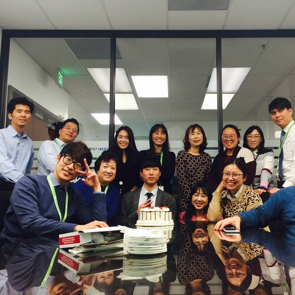
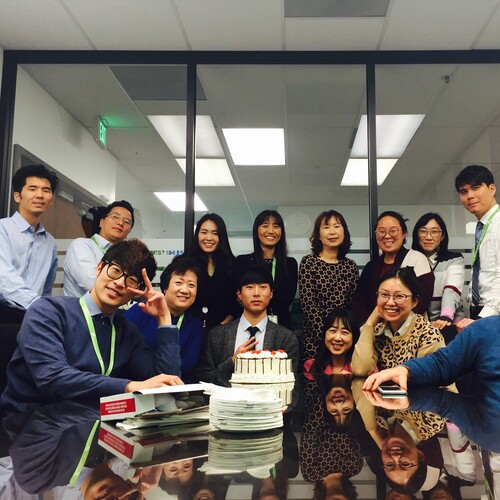

Brian Lee
In the beginning of my high school career, my father’s business went bankrupt, due to the subprime mortgage industry crash, and had to move to Korea for 3 years. I woke up countless nights to the sound of my weeping mother hopelessly staring at piles of bills. She was a lifelong housewife with no work experience who struggled to take care of her four kids, absolutely terrified for the future.
As the eldest son, I felt a filial duty to take care of my family while my father was gone, and by my junior year I was working two jobs, over 40 hours a week. I put my family’s financial stability as my main priority and regretfully was unable to focus on my studies. While all three of my siblings enjoyed college acceptance letters after high school, I was walking into another closing shift at one of my many jobs. After graduating high school, I applied to community college not knowing why I was. My family still relied on me financially, so I was working 2-3 jobs while attending classes.
In 2017, my father was finally able to restart his business, allowing me to work less and focus on being a student again. I focused on school and immediately saw encouraging improvements in my grades.
Although my educational career took a late start, I have no regrets. Although my family’s financial hardship was an educational barrier, the lessons I learned and work ethic I developed have become significant tools that have helped me stay focused on my educational goals. In retrospect, I believe I knew I was destined to do more than just serve tables and work entry level jobs. Moving forward, I am confident that no matter the adversities I may face, I am strong enough to overcome any challenge.
Experience
Cashier, Barista
• Served coffee
• Trained new employees
• Opened and closed daily registers
Special Assets Department Assistant
• Answering calls and writing emails
• Created new loan files
Broker's Assistant
• File management
• Collected rent from Broker's tenants
• Admin work for the New Star Real Estate School
Education
Fairfax High School
Santa Monica College
University of California Riverside
Portfolio


